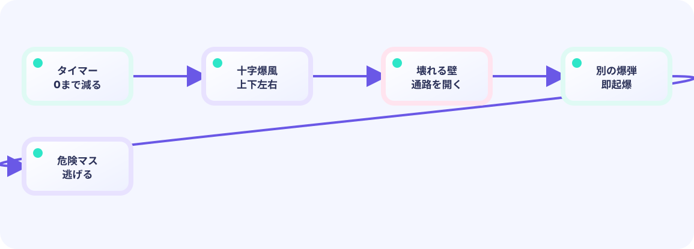

置けるか調べる
同じマスに爆弾がなければ、プレイヤーの座標で追加します。
★★☆☆☆ / PLAYABLE
爆弾は「場所」と「残り時間」を持つゲームデータです。毎フレーム数を減らし、0になったら爆発状態へ切り替えます。
動きの計算は LEVEL 01と同じく、位置や得点などゲームの中身はUpdateで進めます。Drawは中身を変えず、画面への見せ方だけを担当します。
共通基礎の続きです。ゲームの1コマが初めてなら、先にLEVEL 01 の Update / Drawを見てください。
PLAYABLE / WEBASSEMBLY
矢印／WASDで移動、Spaceで設置。クリックとタッチは画面下のボタンを使います。置いたら同じマスから逃げましょう。
はじめて読む人へ
Updateごとにtimer--し、0なら爆発へ進みます。待ち時間でゲーム全体を止めません。 PLAYABLEは『このページで実際に操作できる』という印です。
このページの1本
説明と次のコードを対応させてから、ゲームで変化を確かめよう。
bomb.timer--; if bomb.timer <= 0 { explode() }
DEEP DIVE
見た目だけの丸ではなく、座標・タイマー・状態をひとまとめにします。
同じマスに爆弾がなければ、プレイヤーの座標で追加します。
Updateで全爆弾のタイマーを進めます。
爆発中だけ当たり判定を有効にし、短時間後に削除します。
TRY IT / FUSE
「設置」で爆弾を出し、「1F進める」でタイマーを減らします。0で BLAST、もう一度で削除。状態機械の基本です。
本物は約90フレーム点火。ラボは8で体感しやすくしています。
TRY IT · GO
bombs = append(bombs, Bomb{x, y, timer: fuse}) b.timer--; if b.timer <= 0 { b.state = blast } remove(b)
—
THE FUSE STATE MACHINE
timer-- each frameつぎにtimer<=0 → blasting → remove見た目の丸ではなく、座標・timer・状態を1つの構造体にします。
GO + EBITENGINE
点火中は「爆発までの残り」。0になったら blasting=true にして、同じフィールドへ爆風の寿命を入れ直します。変数は1つでも、状態フラグで意味が切り替わる点に注意。
for i := range bombs {
bombs[i].timer--
if !bombs[i].blasting && bombs[i].timer <= 0 {
bombs[i].blasting = true
bombs[i].timer = blastLife
}
}WITHOUT A SLICE
複数の爆弾が別々の場所と時間を持てるよう、配列（スライス）にします。
WITH A FUSE
同じマスの重複を防ぎ、描画と当たり判定を分かりやすくします。
TRY NEXT
同時に置ける数を2個に増やし、起爆時刻の違いを観察しよう。
FEEDBACK